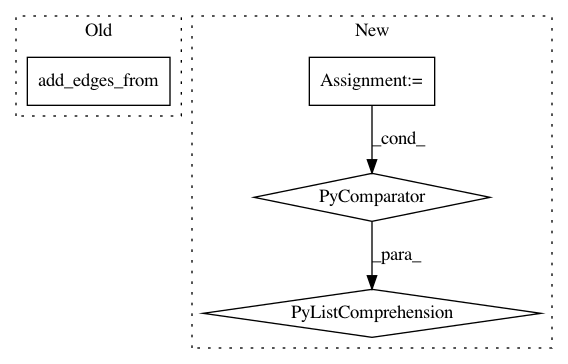

97b2ccec94583a7876566a340f06e84a63340272,pgmpy/inference/ExactInference.py,VariableElimination,induced_graph,#VariableElimination#Any#,210
Before Change
// Final induced graph
graph = nx.Graph()
graph.add_edges_from(edges)
return graph
class BeliefPropagation(Inference):
After Change
working_factors[variable].append(list(phi))
eliminated_variables.add(var)
edges_comb = [itertools.combinations(c, 2)
for c in filter(lambda x: len(x) > 1, cliques)]
return nx.Graph(itertools.chain(*edges_comb))
class BeliefPropagation(Inference):
In pattern: SUPERPATTERN
Frequency: 3
Non-data size: 4
Instances
Project Name: pgmpy/pgmpy
Commit Name: 97b2ccec94583a7876566a340f06e84a63340272
Time: 2015-03-26
Author: pratyaksh@me.com
File Name: pgmpy/inference/ExactInference.py
Class Name: VariableElimination
Method Name: induced_graph
Project Name: neuroailab/tnn
Commit Name: 0d14553fa39718c788b2c3064e24ec10cc218098
Time: 2016-10-07
Author: qbilius@gmail.com
File Name: model.py
Class Name:
Method Name: _construct_graph
Project Name: pgmpy/pgmpy
Commit Name: 45e9fb9d598b8d7723d50386ac2585812a97a540
Time: 2014-06-23
Author: navinchandak92@gmail.com
File Name: pgmpy/MarkovModel/JunctionTree.py
Class Name: JunctionTree
Method Name: _add_jt_edges